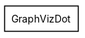
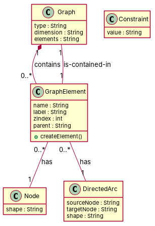

R1: An element in a graph along its location within that graph. R2: A basic element with a name. R3: A Graph object has a type and a dimension. R4: A GraphElement has a label and a z index. R5: A Node element has a shape. R6: A DirectedArc links a source node and a target node and has a shape. R7: A Constraint has a value. R8: There exists SubGraph objects. R9: A Graph object is composed of any number (or none) of GraphElements. R10: A GraphElement contains a reference to its parent Graph.
Red, struck-through: removed by ambiguity removal; green: added.
| actors (0 → 0) |
|---|
| classes (5 → 3) |
|---|
| Element |
| Graph |
| GraphElement |
| GraphObject |
| Shape |
| attributes (6 → 5) |
|---|
| GraphElement.label |
| GraphElement.parent graph |
| GraphElement.reference |
| GraphElement.z index |
| GraphObject.dimension |
| Graph.location |
| Element.label |
| Element.parent graph |
| Element.reference |
| Element.z index |
| relations (0 → 0) |
|---|
| id | req | type | cue | status | readings / explanation |
|---|---|---|---|---|---|
| A1 | R1 | referential | its | resolved | An element in a graph refers to a GraphElement within a Graph.; An element in a graph refers to a Graph within a GraphElement. The phrase 'its location within that graph' is ambiguous and could refer to either a GraphElement within a Graph or a Graph within a GraphElement. |
| A2 | R9 | coordination | noun or noun | resolved | A Graph object is composed of any number of GraphElements (0..*).; A Graph object is composed of any number of GraphElements (0..1). The phrase 'any number (or none) of GraphElements' is ambiguous and could mean 0 or more GraphElements or exactly one GraphElement. |
| A3 | R9 | quantifier | any | resolved | A Graph object is composed of any number of GraphElements (0..*).; A Graph object is composed of any number of GraphElements (0..1). The phrase 'any number (or none) of GraphElements' is ambiguous and could mean 0 or more GraphElements or exactly one GraphElement. |
| A4 | R10 | referential | its | resolved | A GraphElement contains a reference to its parent Graph.; A GraphElement contains a reference to its parent GraphElement. The phrase 'its parent' is ambiguous and could refer to a parent Graph or a parent GraphElement. |


"""Code skeleton generated from the shared model of D2/GraphVizDot.
Every class and method records the requirement(s) it traces to."""
from __future__ import annotations
import dataclasses as _dc
import enum as _enum
import typing as _t
@_dc.dataclass
class Graph:
"""Source: R3, R9"""
type: _t.Optional[str] = None
dimension: _t.Optional[str] = None
elements: _t.Optional[str] = None
graphElements: _t.List["GraphElement"] = _dc.field(default_factory=list)
@_dc.dataclass
class GraphElement:
"""Source: R2, R4"""
name: _t.Optional[str] = None
label: _t.Optional[str] = None
zIndex: _t.Optional[int] = None
parent: _t.Optional[str] = None
node: _t.Optional["Node"] = None
directedArc: _t.Optional["DirectedArc"] = None
graph: _t.Optional["Graph"] = None
def createElement(self) -> None:
"""Operation."""
raise NotImplementedError
@_dc.dataclass
class Node:
"""Source: R5"""
shape: _t.Optional[str] = None
@_dc.dataclass
class DirectedArc:
"""Source: R6"""
sourceNode: _t.Optional[str] = None
targetNode: _t.Optional[str] = None
shape: _t.Optional[str] = None
@_dc.dataclass
class Constraint:
"""Source: R7"""
value: _t.Optional[str] = None
| python_compiles | True |
|---|---|
| java_compiles | True |
| attribute_mismatches | 0 |
| method_mismatches | 0 |
| use_cases | 0 |
| use_cases_without_actor | 0 |
| use_cases_without_method | 0 |
| actors_without_use_case | 0 |
| relations_to_unknown_class | 0 |
| inconsistencies | 0 |
| inconsistency_rate | 0.0 |
| requirement_coverage | 0.8 |
| validator fixes | |
| assumptions for open ambiguities | [] |
| element | P | R | F1 | TP/FP/FN |
|---|---|---|---|---|
| classes | 1.0 | 0.625 | 0.769 | 5/0/3 |
| attributes | 0.5 | 0.316 | 0.387 | 6/6/13 |
| relations | 1.0 | 0.3 | 0.462 | 3/0/7 |
| relations_strict | 0.333 | 0.1 | 0.154 | 1/2/9 |